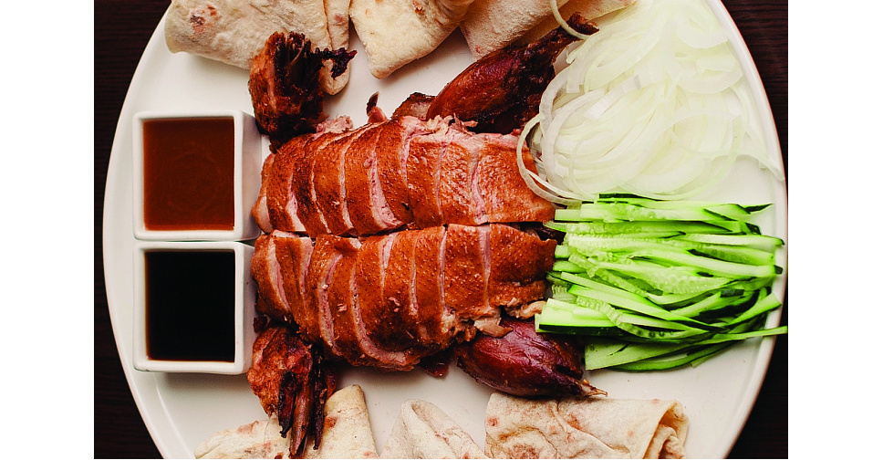
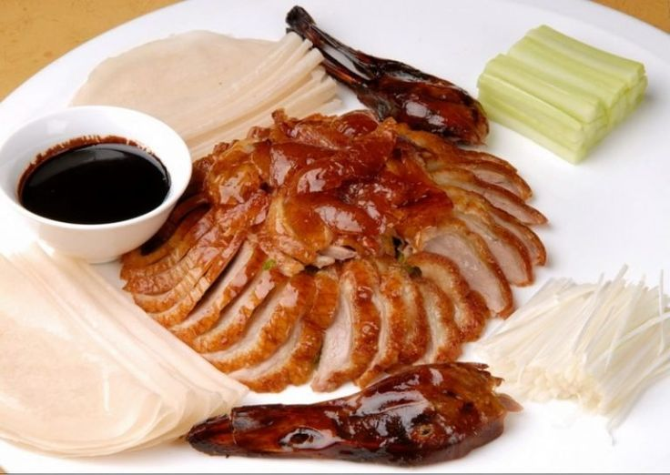
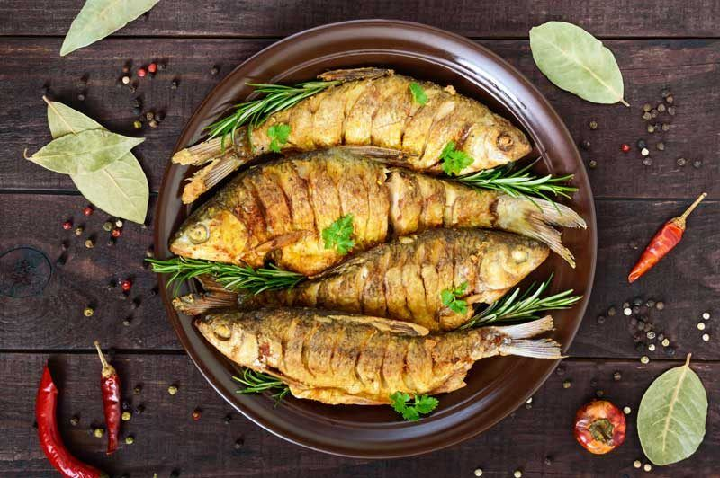
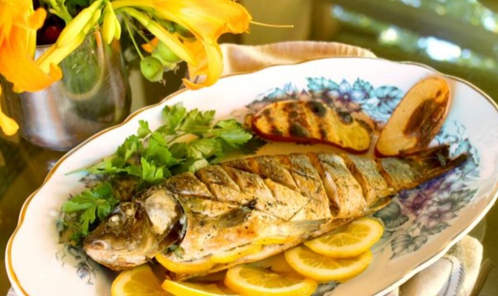
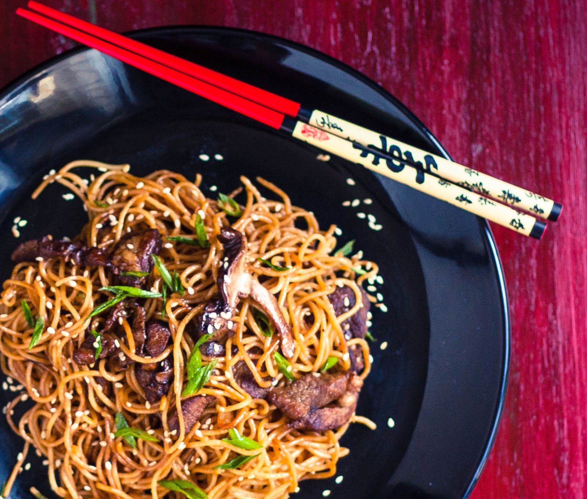
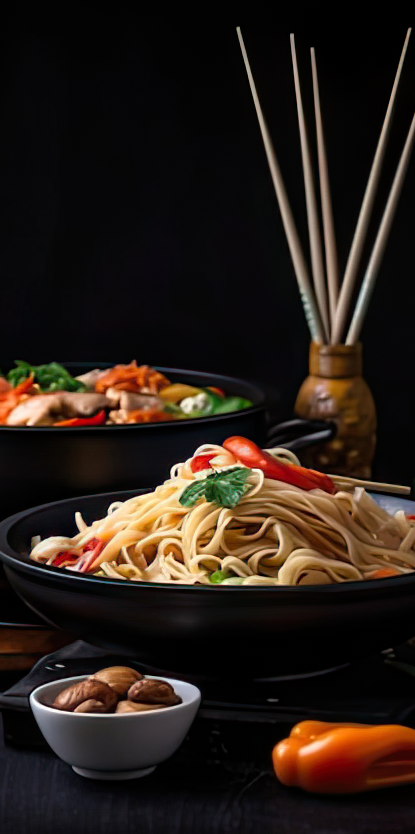

Китайская кухня
Утка по-пекински
Утка по-пекински — одно из самых известных блюд китайской кухни. Представляет собой натёртую мёдом утку, со шкуркой, отслоенной путём нагнетания под кожу воздуха, запечённую в специальной печи на дровах из вишнёвого дерева. Процесс подготовки и жарки занимает около двух суток.



Карп в маринаде
Китайский карп в маринаде — это блюдо, похожее на свинину в кисло-сладком соусе, но вместо мяса в нём используют рыбу, преимущественно карпа. Рыба готовится и подаётся на стол целиком, а чтобы её было удобнее есть палочками, делаются специальные надрезы.



Жареная лапша
Жареная лапша — это блюдо, которое можно подавать в качестве гарнира. Для приготовления можно использовать любую лапшу: яичную, гречневую, рисовую или стеклянную (фунчозу).




